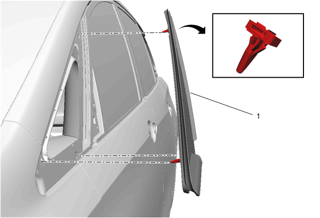

车身侧前车窗的更换
- • J 24402-A车窗玻璃密封胶清除工具（刮刀）
- • J 39032固定车窗玻璃拆卸工具
- • 使用符合上汽通用汽车公司规格的聚氨酯粘合剂系统
专用工具
当地同等工具：专用工具
拆卸程序
-
警告：有关车窗出现裂纹的警告1.打开举升门。注意:在切除车身侧前车窗前，在涂漆表面和内饰的周边贴上双层遮蔽带。
- 2.挡风玻璃装饰条 » 拆下–挡风玻璃装饰条的更换
- 3.松开仪表板上装饰板左侧以接近定位销。仪表板上装饰板的更换
- 4.前侧门腰线侧装饰条 » 拆下–前侧门车窗腰线侧装饰条的更换
-
5.遮盖以下零件，以免碎玻璃进入：警告：有关除霜器出风口的警告
- • 上前围板垫
- • 除霜器出风口和空调出风口
- • 座椅和地毯
-
6.{如装备}使用多用途刀，从车窗侧边和顶端小心地切割饰条(1)，以便接近聚氨酯粘合剂胶条。

-
 7.清除车窗上的聚氨酯粘合剂。注意:保持工具的刃口紧靠车窗。
7.清除车窗上的聚氨酯粘合剂。注意:保持工具的刃口紧靠车窗。 - • 在夹焊凸缘上保留约 2 mm（0.078 in）的聚氨酯粘合剂底层。
- • 清水是唯一适用的润滑剂。
- • 使用J 24402-A车窗玻璃密封胶清除工具（刮刀）、J 39032固定车窗玻璃拆卸工具或同等工具拆下车窗。
-
8.如有必要，使用较长的多用途刀或类似工具，清除车窗底部角落的聚氨酯粘合剂。注意:保持刮刀/工具刃口紧靠车窗。在车内完成此操作。
-
9.从车辆拆下车窗(1)。
安装程序
- 1.将粘合剂底剂涂抹在车身侧前车窗窗框上和车 身侧前车窗周围
- 2.将玻璃粘合剂涂抹在车身侧前车窗窗框上。
- 3.将车身侧前车窗(1) 装入车身侧前车窗窗框。确 保车身侧前车窗紧固件安装到位。
- 4.对准车窗和车身上的遮蔽带线。
- 5.用力按压车窗四周，挤住聚氨酯粘合剂。
- 6.用遮蔽带将车窗玻璃粘在车身上以减少移动，直到聚氨酯粘合剂固化。
- 7.清除车身上多余的聚氨酯粘合剂。
-
8.用温水轻轻地喷淋，立即对车窗进行漏水测试。注意:切勿用高压水流直接喷射刚涂抹的聚氨酯粘合剂。
- 9.检查车窗是否漏水。
- 10.如果发现漏水，则用塑料抹刀在泄漏点再涂抹一些聚氨酯粘合剂。
- 11.再次测试车窗是否漏水。
-
12.保持以下条件，以使聚氨酯粘合剂正确固化：警告：如果聚氨酯粘合剂未完全固化，可能会使未系安全带的乘员从车中弹出，造成人身伤害。
- 对于湿固型聚氨酯粘合剂，让其在 21°C（70°F）或更高温度、至少为 30% 的相对湿度下至少固化 6 h。聚氨酯粘合剂完全固化至少需要 24 h。
- 对于化学固化型聚氨酯粘合剂，至少应固化 1 h。
在未达到最短固化时间前，切勿触碰修理部位。 - • 在聚氨酯粘合剂固化前，切勿行驶车辆。参见上述固化时间。
- • 切勿使用压缩空气干燥聚氨酯粘合剂。
- 13.前侧门车窗腰线侧装饰条 » 安装–前侧门车窗腰线侧装饰条的更换
- 14.仪表板上装饰板» 安装–仪表板上装饰板的更换
- 15.挡风玻璃装饰条» 安装–挡风玻璃装饰条的更换
- 16.拆下涂漆表面和内饰周围的双层遮蔽带。
- 17.完成车窗的安装。